政策のメタネイチャーを実現する
生成AIと人間の協調的関係性の設計：公共交通政策を事例として
永田右京
2026年6月｜博士論文中間発表
地方分権の「逆回転」——2024年地方自治法改正
第1章（序論）の元文献（著者業績）
- 永田右京（2024）修士論文『日本版MaaSの政治過程――日本とフィンランドの比較と地域公共交通政策の規制に関する議論』（慶應義塾大学大学院政策・メディア研究科）
- 永田右京（2025）「ウィキッド・プロブレムとしての『地域公共交通』政策領域と政策展開に関する一考察…」第29回日本公共政策学会 講演集
- 博士論文第1章（執筆中）——本発表スライド0–13が対応
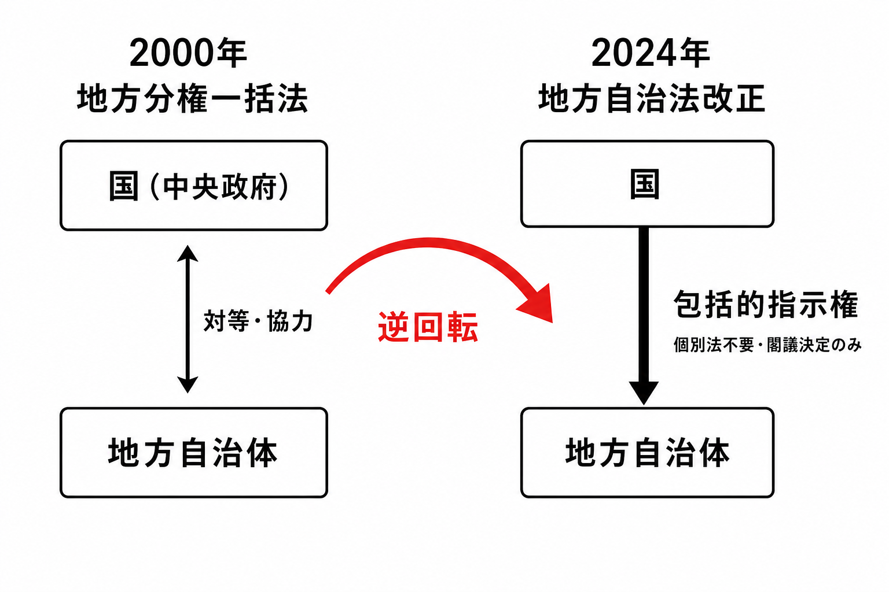
2000年の到達点
- 地方分権一括法（1999年成立・2000年施行）——国と自治体の関係を「上下・主従」から「対等・協力」へ転換
- 機関委任事務制度の廃止——国は法令の範囲内でしか自治体を拘束できなくなった
2024年の逆回転
- 地方自治法改正（令和6年法律第65号、2024年6月19日成立）——第14章「国と地方公共団体との関係等の特例」を新設
- 「国民の安全に重大な影響を及ぼす事態」に個別法不要・閣議決定のみで国が自治体に包括的指示権を行使可能
- 白藤（2024）：「包括的な指示権の行使によって地方自治体を国に従属させるもの」
第33次地方制度調査会答申（2023年12月）の認識：コロナ禍において「個別法が想定しない事態が生じた場合、国は地方公共団体に対し法的義務を生じさせる関与を行うことができず、個別法上も地方自治法上も十分に役割を果たすことができない」——この法的空白が改正の直接の契機。白藤（2024）はこれを「2000年地方分権改革の逆回転」と評価する。
公共交通政策が示す「規範生成能力の欠如」
2023年改正：全自治体に計画策定を義務化
- 地域公共交通活性化・再生法改正（2023年）——987自治体に地域公共交通計画の策定を義務化
- 策定義務化は「何を目標とするか」の定義を自治体に委ねるが、その定義を支援する仕組みは整備されなかった
実態（本論文 第3・4章の実証）
- 42自治体中、客観的評価に耐える効果定義ができていたのは1自治体のみ（第3章アンケート調査）
- 運輸局ダミーの説明力（R²=13.8〜17.2%）が地理的特性（R²=0.1〜2.2%）を大幅に上回る——「どこに所属するか」が「どこにいるか」より評価基準を規定（第4章）
- A市：B/C>1を要件とされたが算出基準なく「わからない数字は出せない」（ヒアリング）
権限の移譲は行われた——しかし「何のために政策を行うか」を自律的に決める能力は移らなかった。→ これが本研究の問いを立ち上げる構造的問題。
問いの射程——「政策のメタネイチャー的環境」
斉藤（2025）のメタネイチャー
- AGIと極度の自動化が進んだ社会において、人工環境が「新たな自然」となる状態——人間が農耕で自然を「手入れ」してリソースを得るように、自動化されたシステムを「手入れ」して産出を得るパターン（斉藤 2025）
- 環境自体が自律的に生産・分配の動作を続け、中央の指示なしに一定品質の機能が維持される
政策への接続（本研究）
- 「政策のメタネイチャー的環境」＝一定品質の政策が、中央省庁なしにどの地域でも自律的に生成・評価され続ける状態
- 地方分権の逆回転を招いた構造的問題——「規範生成能力の欠如」——への根本的応答
メタネイチャーの定義において人間コミュニティーが「何が成されるべきか」を決める主体——これが本構想の前提であり、論証の中心軸。
政策合理化60年の挫折——同じ壁への三度の衝突
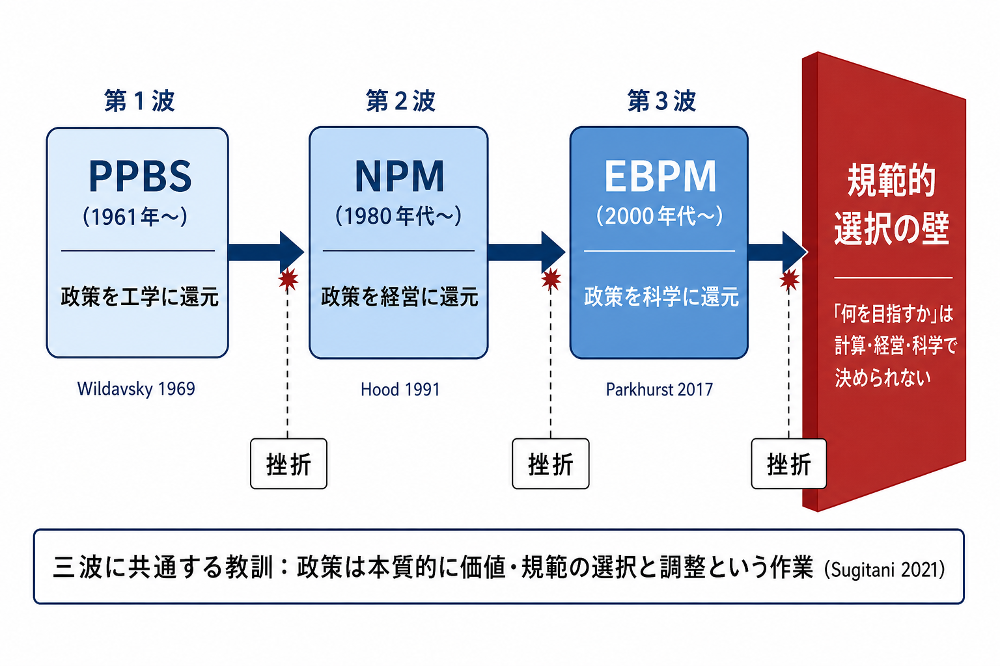
政策を工学に還元
政策を経営に還元
政策を科学に還元
どのツールを使っても、政策が本質的に価値・規範の選択と調整という作業であるという事実を、より精緻な計算・経営・科学で「迂回」しようとした——三波はいずれも同じ壁に突き当たった（Sugitani 2021, 2024; Wildavsky 1969; Hood 1991; Parkhurst 2017）。では、規範的選択を支援する技術は存在するか。
PPBSの失敗——政策を工学に還元できない
- マクナマラ国防長官のもと米国防総省に導入（1961年）——費用便益分析で最適資源配分を実現しようとした（Schick 1966）
- ジョンソン政権が全連邦省庁へ拡大適用（1965年）——政策を数式で解ける問題に変換する試み
- 1971年、ニクソン政権が連邦全体へのPPBS適用を廃止
- Wildavsky（1969）：防衛省で成立した前提条件——「高品質な分析が予算プロセスを通じて行動に結びつく環境」——は国内政策の大半の省庁には存在しない
- 「コスト削減か移動権の確保か、効率か公平か」——こうした問いに「正しい答え」を計算する方法は存在しない（Rittel & Webber 1973; Sugitani 2021）
失敗の理由は技術的なものではなかった。問題は、政策目標そのものが競合する価値の間での規範的選択によって決まるという、政策という営みの根本的な性格にあった。
NPMの失敗——政策を経営に還元できない
- サッチャー改革（1979年〜）を起点に英・豪・NZへ波及——Hood（1991）：業績管理・競争・顧客志向・結果重視の体系として整理
- 日本では橋本行財政改革（1996〜）→中央省庁再編・独立行政法人制度の創設（2001年）（Sugitani 2024）
- Pollitt & Bouckaert（2017）12か国比較：NPM型改革は「測定の逆説」を招いた——数値として測定しやすいアウトプットが目標化し、本来の政策目的が埋没する
- 「何を指標とするか」という問いは価値判断であり、効率と公平のどちらを優先するかは市場原理では決まらない（Hood 1991）
NPMもPPBSと同じ問題につまずいた——規範的選択を回避したまま効率化を追求した。
EBPMの失敗——政策を科学に還元できない
- 2000年代以降、「証拠に基づく政策形成（EBPM）」が第三の波として普及（Sanderson 2002）。日本では2017年にEBPM推進委員会を設置（Sugitani 2024）
- Parkhurst（2017）のイシュー・バイアス——RCTの適用可能なテーマに政策課題が誘導され、定量化しにくいがゆえに政治的・社会的に重要な問題が周辺化される
- エビデンス階層を課すルールは「偏向を動員する」可能性を持つ（Parkhurst 2017）
- 「よりよいエビデンス」の追求は「よりよい問い」を立てることを代替しない（Sugitani 2022）
PPBS・NPM・EBPMの三波は、政策が本質的に価値・規範の選択と調整という作業であるという事実を回避しようとした点で同じ過ちを犯している（Sugitani 2021, 2024; Rittel & Webber 1973）。
三波に共通する壁——「規範の選択の迂回」
| 波 | 還元先 | 失敗の核心 | 残した問い |
|---|---|---|---|
| PPBS 1961年〜 | 工学 （最適化計算） | 目標設定自体が価値判断——計算の外にある | 「何を指標とするか」は誰が決めるか |
| NPM 1980年代〜 | 経営 （市場原理） | 効率と公平の選択は市場で決まらない | 「測定の逆説」を回避する設計は可能か |
| EBPM 2000年代〜 | 科学 （統計的証拠） | 「よい問い」は「よいエビデンス」で代替できない | 問いを立てる主体は誰か |
どのツールを使っても、問題設定の段階で規範的選択が先行して行われている。合理化は規範の選択を省略できない——では、その選択を支援する技術は存在するか。
Web3という先行実験——同じ夢・同じ壁
同じビジョンを先に追った
- ビットコイン（2009年）——「ビザンチン将軍問題」を暗号学的ハッシュ関数＋分散台帳で解決（斉藤 2018）
- DAO（Decentralized Autonomous Organization）——スマートコントラクトによる規則の自動執行・分散的ガバナンスを実現
- 政策ガバナンスの分散化——中央省庁に依存しない政策評価の技術的射程が見えた
突き当たった壁——規範的判断はコードに書けない
- De Filippi et al.（2020）：ブロックチェーンは「確信の機械」——ネットワーク設計・ガバナンスには依然として人間の信頼が必要
- スマートコントラクトが実行できるのは事前に定義されたルールのみ——「この政策は望ましいか」は処理不能（オラクル問題）
- 21のDAOにおける投票権集中・ガバナンスの形骸化（Feichtinger et al. 2024）——分散設計が集権的運用に帰着
Web3はコードで規範的判断を代替できないことを実証した——60年の合理化が突き当たった同じ壁。→ 生成AIは異なる回路を持つか。
生成AIが開いた問い——「規範の支援」という新回路
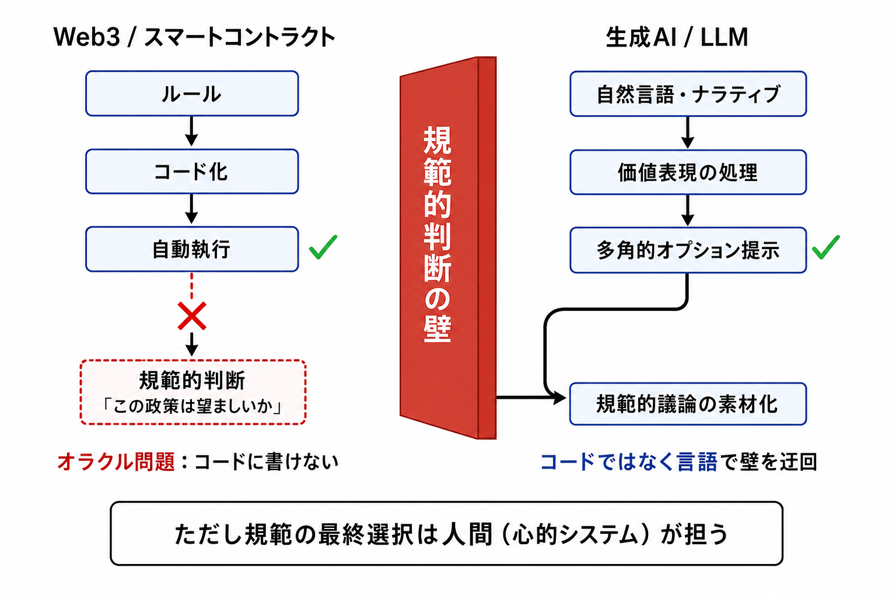
- Constitutional AI・LLM as a Judge——価値原則の埋め込みと秘密保護下での評価を技術的射程に入れつつある
しかし——「AIが支援できる」は「AIが判断できる」ではない。規範の創造・更新は誰が担うのか。この問いが四つのRQを立ち上げる。
四つの問い（Research Questions）
| RQ | 問い | 応答する章 |
|---|---|---|
| RQ1 | 非理想的な政策形成プロセスはどのようなものか | 第2〜4章（診断） |
| RQ2 | 生成AIはメタネイチャー的政策環境を理論的にどこまで支えられるか | 第5章（理論・計算論） |
| RQ3 | 合理的政策は必要か——認知バイアスは政策実現においてすべて悪か | 第6章（計算論的実証） |
| RQ4 | メタネイチャー的政策環境は技術的に実現できるか | 第7〜8章（設計・実装） |
四層は「なぜ必要か → どこまで可能か → 合理性前提は不要か → どう作るか」という一本の論証線をなしている。
これらは「政策のメタネイチャー」を実現しようとするとき避けて通れない、構造的な懐疑論への段階的応答である。
論文構造図
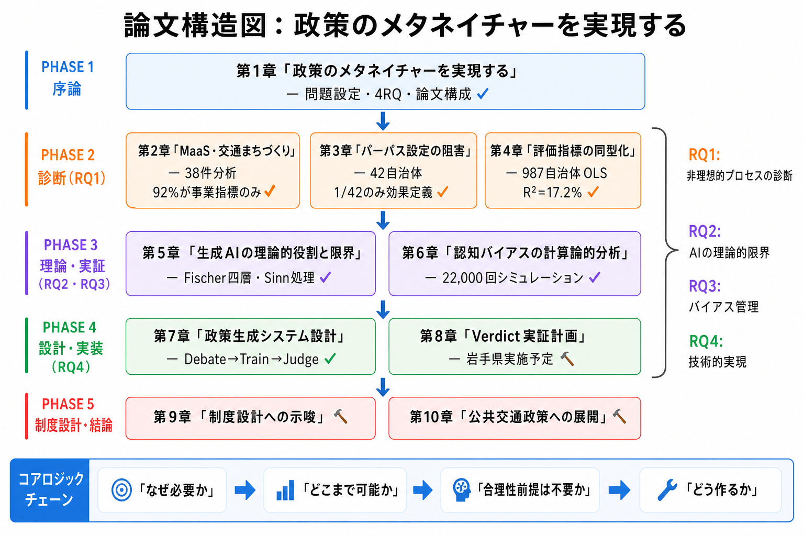
本日の構成
①序論（slide 1–11）→ ②診断：規範が内発できていない実態（第2–4章）→ ③RQ1–3への応答（第5–8章）→ ④今後の実証と制度設計
| 章 | 役割 | 状態 |
|---|---|---|
| 第1章 | 序論：政策のメタネイチャー | ✅ |
| 第2章 | 診断：MaaS・交通まちづくり | ✅ |
| 第3章 | 診断：パーパス設定（42自治体） | ✅ |
| 第4章 | 診断：評価指標の同型化（987自治体） | ✅ |
| 第5章 | RQ2：生成AIの理論的限界と役割 | ✅ |
| 第6章 | RQ3：認知バイアスの計算論的分析（22,000回） | ✅ |
| 第7章 | RQ4：政策生成システム設計 | ✅ |
| 第8章 | RQ4：Verdict実証計画 | 🔨 |
| 第9章 | 制度設計への示唆 | 🔨 |
| 第10章 | 結論・公共交通政策への展開 | 🔨 |
非理想的な政策形成プロセスはどのようなものか
第2章（調査①）：MaaS実装分析——研究目的
本章の元文献（著者業績）
- ◎ 永田右京（2025）「『日本版MaaS』は『交通まちづくり』の一類型として捉えられるか？―目標とガバナンスについての一考察―」『土木学会論文集』80(20), 24-20140（査読付き）
- 永田右京（2023）「『まちづくり』の一類型としての『日本版MaaS』における目標とガバナンスについての一考察」第70回土木計画学研究・講演集
- 永田右京（2024）修士論文『日本版MaaSの政治過程…』（慶應義塾大学）——フィンランド比較・政治過程分析の基礎
- 研究助成：2024年度 JCoMaaS研究助成
研究目的
日本版MaaSを「交通まちづくり」実践の一類型として分析し、①政策目標設定の状況と②市民の批判回路の整備状況を実証的に確認する。MaaSが「事業の手段」ではなく「政策の手段」として機能しているかを検証する。
交通まちづくりの定義
- 太田（2003）：「交通に関連する地域の課題への対応をベースにして、市民と行政が協働して進めるまちづくり」——「交通計画における住民・市民の参加」と「都市計画・まちづくりとの連携」の2点が重要
- 本稿のスタンス：市民参加プロセスについては手続主義・非帰結主義、公共交通それ自体については帰結主義のアプローチ
STOフレームワーク（本章の分析モデル）
Van de Veldeが提唱：意思決定をS（戦略/10年以上）、T（戦術/1〜5年）、O（運営/日〜月単位）に分類。日本の政策変遷をこの枠組みで分析すると、国がS層からT1層・T2層へと関与を強め、自治体裁量がO層へ後退している構造が明らかになる。
第2章（調査①）：リサーチクエスチョンと仮説
リサーチクエスチョン
- RQ①：日本版MaaS推進事業において、政策目標設定はどこに置かれているか——MaaS事業の事業性に関する指標のみか、地域への効果指標も含まれているか
- RQ②：立場を問わない市民による批判回路がどのように整備されているか——協議会参加・パブリックコメント等の実質的仕組みが確立されているか
仮説
- 仮説①：目標設定はMaaS事業の事業性（利用者数・収益・効率）に設定されるが、地域生活への効果・社会的影響は設定されない
- 仮説②：市民による批判回路は協議会に閉じており、パブリックコメント・市民代表参加などの実質的仕組みは整備されていない
分析評価指標
- ①：KPIに事業利用状況（利用者数・収益・接続事業者数）以外の指標があるか
- ②：協議会等に交通事業者・システム供給者・学識者・自治体以外の市民参加があるか
第2章（調査①）：主要結果——38件の実装ギャップ
RQ①：目標設定
- 38件中35件（92%）がKPIを事業指標（利用率・収益・運営効率）のみで構成
- 非事業指標（社会的影響・アクセシビリティ改善・環境成果）を含む：29%（11/38）
- 交通政策基本計画（第2次）が掲げる「地域が自らデザインする持続可能なモビリティ」との乖離が顕著
RQ②：市民参加・批判回路
- 有意義な市民参加機構（パブリックコメント・市民代表参加）を確立：5%（2/38）のみ
- Heikkilä（2014）の第1要件「全ステークホルダーの協力体制」が最も欠落している要素
- STOフレームワーク：2018年以降、国のT2層への関与が強まり、自治体の裁量はO層へ後退
仮説①②ともに確認——日本版MaaSは「交通まちづくり」の実装段階でその要件に合致しない。
第2章：MaaS・交通まちづくりの実装ギャップ
MaaS（Mobility as a Service）：複数の交通モードをシームレスに統合し、単一のプラットフォームで提供するモビリティサービスの概念（Heikkilä 2014）。「交通まちづくり」の共創モデルとして日本版MaaSが2020年に38件認定された。
- 38プロジェクト中92%が事業指標のみを評価基準として採用——地域生活の質・移動弱者への効果は計測されていない
- 市民参加の仕組みを設けたのはわずか5%（2/38）——有意義な市民参加の仕組みが確立されていない
- STOフレームワーク（Spatial空間・Technical技術・Organizational組織）分析の結果：2018年以降、国のT層への関与が強まり、自治体の裁量はO層（日々の運営）へと後退——「全ステークホルダーの協力体制」（Heikkilä 2014 が第1要件として挙げる）の実現は限定的にとどまっている
38プロジェクトの分析が示す実装ギャップ——事業指標偏重・市民参加の形骸化・自治体裁量の後退——は、「交通まちづくり」の共創モデルが機能していないことを示す。次章ではその前段階、パーパス設定そのものの欠如を実証する。
第3章（調査①）：インタビュー調査——研究目的
本章の元文献（著者業績）
- 永田右京「地域公共交通政策のパーパス設定に係る地域公共交通活性化・再生法の運用検討」『土木学会論文集 通常号』（査読中）
- 永田右京（2024）「「連携」と「共創」の再構築―地域公共交通政策における共創と競争の両立を目指した制度の構想―」第47回日本計画行政学会全国大会 講演集
- 永田右京（2025）「LLMを文書作成に活用した地域公共交通計画策定プロセスの可能性とルーマン社会学から見た転回」第72回土木計画学研究発表会・講演集
- 永田右京・宇佐美誠史（2025）「地域公共交通活性化再生行政における個別制度の矛盾と運用上の対応」第72回土木計画学研究発表会・講演集
位置づけ
第2章が示した「目標設定の乖離・評価指標の同型化」を受け、地域公共交通活性化・再生法の運用をパーパス設定の観点から深掘りする実証・政策分析章。
パーパスの定義
名和（2021）：「他者にとって価値をもたらす存在意義・目的」——SDGsが叫ばれる「パーパス経営」の時代に、地域公共交通においても費用便益比を超えた目的の明確化が求められる。
着目する構造的問題
- 地方自治体・地方運輸局・国土交通省間の権力非対称性
- 再編実施計画認定における費用便益比（B/C）偏重の構造
- 「地方自治の本旨」（住民自治・団体自治）が公共交通計画において機能しているか
第3章（調査①）：問い・仮説
問い
地域公共交通網形成計画において、費用便益比（B/C）偏重の制度的構造が「まちづくりへの連携」という本来の目標設定（パーパス生成）を阻害しているか
仮説（構造的問題の仮説）
- 仮説①：再編実施計画認定においてB/C>1を求める国の要件が、クロスセクターベネフィット（医療・福祉・教育）の算定を困難にしている
- 仮説②：「持続可能性」が費用抑制と同義化し、グッドハートの法則（指標が目的を侵食する現象）が発動している
- 仮説③：まちづくりへの連携を実現しようとする自治体ほど、国から適切な補助が受けられない
分析枠組み：Boswell et al.の四基準
- 基準①：選択肢の認識（やめる選択肢も含め複数オプションを認識できているか）
- 基準②：グッドハートの法則への対処（測定指標が目的に侵食されていないか）
- 基準③：合成の誤謬の認識（個別判断が全体最適と矛盾しないか）
- 基準④：外部効果の内部化（CSBを計算できるか）
第3章（調査①）：インタビュー結果①——A市・B市
A市：B/C要件がボトルネック（基準①②の機能不全）
- 国土交通省がB/C>1を再編実施計画の要件として課す——A市はB/Cの正確な予測手法を持たない
- 対応：「わからない数字は出せない」として収益率（I/C）に置き換えて審査
- クロスセクターベネフィット（医療・福祉・教育）の算出基準が存在せず——基準④の機能不全
- → 「選択肢の認識」（基準①）が制度的に阻害：住民サービスが収益性の観点で制約された
B市：持続可能性の目的侵食（基準②の機能不全）
- 「持続可能な公共交通網の形成」＝費用増加の抑制・運転手不足の解消として解釈
- 財政制約と運転手不足により路線の刈込み・ダウンサイジングを余儀なくされた
- → グッドハートの法則が発動：「持続可能性」指標が目的を侵食した典型例
第3章（調査②）：アンケート調査——目的と対象地域
調査②の位置づけ
インタビュー調査（調査①）の3事例が示した「パーパス設定阻害のメカニズム」が、より広範な自治体に当てはまるかを量的に検証する。「公共交通の地域への効果を客観的に評価できる形で定義しているか」を確認する。
確認の重点
- 確認①：公共交通の地域への効果を客観的に評価できる形で定義しているか
- 確認②：定義されないとき、それはいかなる場合か——阻害要因の特定
対象地域の選定理由（北海道・東北運輸局管内）
- 過疎化・高齢化が進み「交通まちづくり」の必要性が最も高い地域
- 調査①（インタビュー）対象地域と同一管内——問題構造の継続性
- 地域公共交通維持が喫緊の課題——パーパス設定の有無が特に問われる文脈
第3章（調査②）：問い・仮説
問い
- 北海道・東北運輸局管内において、自治体が公共交通の「効果」を客観的に定義できているか
- 効果が定義されない場合、その阻害要因は何か
仮説
- 仮説①：「効果を定義している」と自己評価する自治体は多いが、客観的評価に耐えられるものは少数（42自治体中数件以下）
- 仮説②：設定されない主要因は「方法が分からない」という能力制約（最多）、次いで「必要性を感じない」という意識問題
- 仮説③：インタビュー調査（調査①）が特定したメカニズム（B/C偏重・グッドハートの法則）が量的にも確認される
「客観的評価に耐える」の基準
- 数値同士の関係性として提示できる（例：「バス利用1回増で病院未受診が○件減」という因果関係）
- 単なる利用者数増減の目標設定ではなく、地域課題との連関が明示されている
- 第三者が検証・批判できる形式になっている
第3章（調査②）：主要結果
効果定義の実態
- 「効果を定義している」と自己評価：約半数（21/42）
- そのうち客観的評価に耐えうる形ができていた：42自治体中1のみ
- 当該自治体が計画策定に必要なスキルとして挙げたのは「現状分析できるだけのスキル」
阻害要因（効果を設定しなかった23自治体）
| 理由 | 件数 | Boswell基準との対応 |
|---|---|---|
| 設定する方法が分からない | 7件（最多） | 基準①②への対処スキル不足 |
| そのような意見が出なかった | 5件 | 基準①の認識不足 |
| 必要性を感じない | 5件 | 基準①の認識不足 |
| 公共交通空白地への対応を優先 | 3件 | 基準③（合成の誤謬） |
「方法が分からない」能力制約と「必要性を感じない」意識問題が主因——仮説②確認。42自治体中1という数値は仮説①を確認する（調査①のA市「わからない数字は出せない」と直接対応）。
第3章：「連携」以前に——パーパスそのものが生成できていない
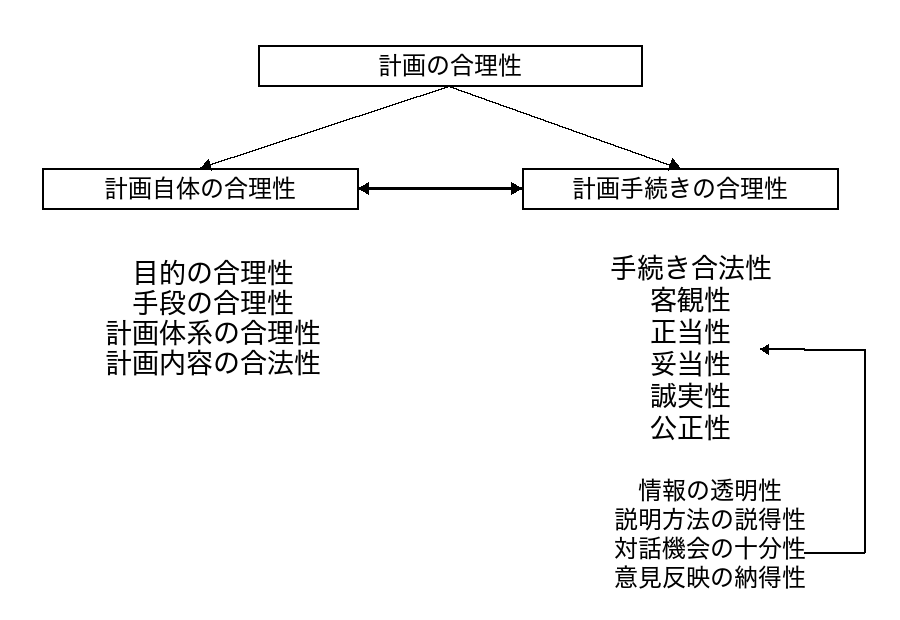
「連携は言説に留まる」（第2章）を受け、連携以前の段階——「何のために交通を維持するか」というパーパス設定自体ができているかを検証する。
- 北海道・東北運輸局管内で地域公共交通計画を策定した129自治体を対象にアンケート調査（回答42自治体）
- 42自治体中、客観的評価に耐える効果定義ができていたのは1自治体のみ——半数近くが「効果を定義している」と自己評価するが、定量的根拠を持つのは1件
- 効果を設定しなかった23自治体の最多要因：「設定する方法が分からない」（7件）——次いで「そのような意見が出なかった」「必要性を感じない」（各5件）
- B/C>1を要件化されながら算出基準が与えられないA市：「わからない数字を出すことはできない」として収益率（I/C）に置き換えて審査——クロスセクターベネフィットは計測不能
地域行政は「何のために交通を維持するか」を自律的に生成できていない——費用便益比偏重によってパーパス設定が阻害されている構造（第3章）。では、この阻害のメカニズムは評価指標の選択にまで及んでいるのか。
第4章：評価指標の運輸局間比較——研究目的
本章の元文献（著者業績）
- 永田右京「地域公共交通計画における評価指標の運輸局間比較と説明要因の検討」『評価学研究』（日本評価学会）（査読中）
- 永田右京（2024）「『地域公共交通政策』の存立理由の説明―行政事業レビューにおける計画目標と予算の変遷から―」第70回土木計画学研究・講演集
位置づけ
第2章（調査②）の予備的分析が示した「運輸局説明力 > 地理的特性説明力」を、より厳密な統計的手法・完全なデータセット（987自治体・12,568指標）で検証する。DiMaggio & Powellの同型化理論の枠組みで、行政組織が評価指標選択を規定するメカニズムを実証する。
分析目的の三段階
- 統計的検定（Kruskal-Wallis）により運輸局間の有意差を特定
- 自治体レベルの採用率分布を比較し、集計値では見えない差異を明らかにする
- クラスタリング分析により自治体の評価指標採用パターンを類型化
政策的含意
評価原則が上位組織から「所与として与えられている」構造——第7章のシステム設計（評価原則のコミュニティ討議による内発）の実証的根拠となる。
第4章：問い・仮説
問い
- 9つの地方運輸局間で、地域公共交通計画の評価指標選択パターンに有意な差があるか
- その差は地理的・財政的特性によって説明されるか、行政組織（運輸局所属）によって説明されるか
- 「まちづくり目標」（impactカテゴリ）を採用する自治体クラスタは何%を占めるか
仮説
- 仮説①：運輸局ダミーのR²が地理的特性のR²を大幅（5倍以上）に上回る
- 仮説②：全指標カテゴリにわたりKruskal-Wallis検定で有意差（p < 0.05）が確認される
- 仮説③：impactカテゴリを重視するクラスタは全体の5%未満にとどまる
第4章：主要結果——運輸局説明力 vs 地理的特性
- 地理的・経済的特性のみ：R² = 0.1%〜2.2%——地域の特性は評価指標選択にほぼ影響しない
- 財政力指数追加：向上はわずか——財政状況も規定要因として弱い
- 運輸局ダミー導入：R² = 13.8%〜17.2%——地理的特性の約5〜100倍の説明力
- Kruskal-Wallis検定：全11指標カテゴリで有意差（p < 0.05）
- 例：財務指標採用率——北陸信越（18.9%）対中部（6.2%）：約3倍の差
「どこにいるか（地理）」ではなく「どこに所属するか（運輸局）」が評価基準を規定——DiMaggio & Powellの同型化圧力が日本の地域公共交通計画においても作動。
第4章：なぜ「自律的に生成できない」のか——評価指標の同型化
「パーパスが外部付与」（第3章）の定量的メカニズムを実証する。評価原則が上位組織から「所与として与えられている」構造を明らかにする。
- 運輸局ダミーの説明力（R²=13.8〜17.2%）が地理的特性（R²=0.1〜2.2%）を大幅に上回る——全国987自治体・12,568指標のOLS回帰分析（2024年）
- 「どこに所属するか」が「どこにいるか」より評価基準を規定——DiMaggio & Powell（1983）の同型化圧力（模倣的・規範的）が作動
- 形式上の「計画策定義務」は、すでに枠組みが与えられた後の参加にとどまる
「執政の創造性」は制度的に封じられている——評価原則をコミュニティ討議から内発させる設計が必要。だが、それは誰が担うのか。この問いが四つのRQを立ち上げる。
診断の小括——三章が示す構造的問題
地域行政は、政策目的・評価基準・合意形成を自律的に生成できていない。第2章（実装ギャップ）→第3章（パーパス外部付与）→第4章（同型化メカニズム）は同一構造を三層で確認している。
この診断から、四つのRQが立ち上がる：
- RQ1（診断）：非理想的な政策形成プロセスはどのようなものか——第2〜4章で応答済み
- RQ2（理論）：生成AIはメタネイチャー的政策環境を理論的にどこまで支えられるか——第5章で応答
- RQ3（計算論）：合理的政策は必要か——認知バイアスはすべて悪か——第6章で応答
- RQ4（設計・実装）：メタネイチャー的政策環境は技術的に実現できるか——第7・8章で応答
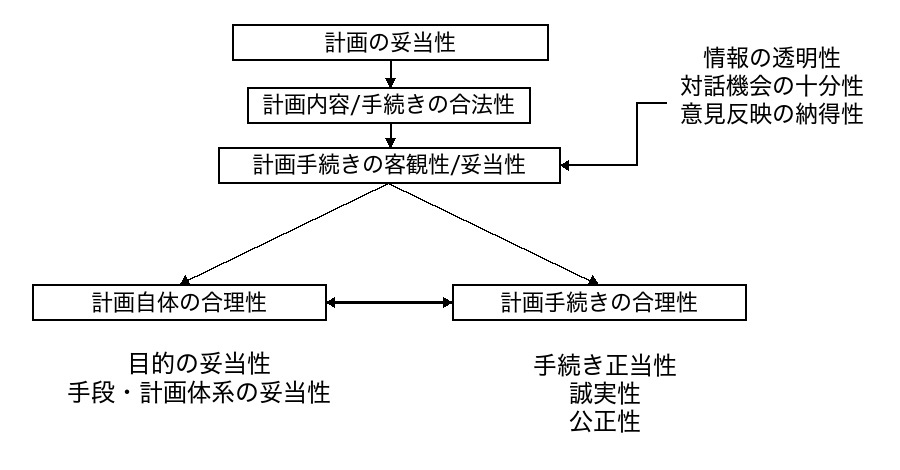
RQ1：非理想的な政策形成プロセスはどのようなものか
懐疑論：診断パートだけで十分ではないか——「現状が悪い」を示しても、改善の方向性は明らかにならない。規範生成を「誰が担うか」という問いは、政策の世界ではそれほど新しくないのではないか。
- 第2〜4章の診断は「何が欠如しているか」を定量的に特定した——92%が事業指標のみ、運輸局R²=13.8〜17.2%、42自治体中1のみ効果定義
- 「非理想的プロセスの特定」はメタネイチャー実現の設計要件を導出するために不可欠——どこを修正するかを知らずに技術的解決策は設計できない
- 診断の蓄積がRQ2・RQ3の応答に論理的根拠を与える——三層は独立ではなく累積的な論証線をなす
RQ1の結論：三層の実証が示す構造——MaaSの実装ギャップ・パーパス設定の阻害・評価指標の制度的同型化——は、地域行政が規範生成能力を持てていないことを多角的に定量化した。この診断がRQ2・RQ3・RQ4の問いを立ち上げる。
生成AIはメタネイチャー的政策環境を理論的にどこまで支えられるか
第5章：研究目的——生成AI時代の政策規範
本章の元文献（著者業績）
- 永田右京「生成AI時代の政策規範――学習論から創造システム・社会システム理論へ――」『政策情報学会誌』（査読中）
- ◎ 永田右京（2024）「AI活用と公共政策―人工知能に対抗するための『執政の創造性』概念」第20回政策情報学会研究大会 予稿集原稿
- 永田右京（2025）「知識創造と行政―生成AI環境で生まれるグラデーションのコミュニケーション」日本計画行政学会 次世代研究交流部会 研究合宿
本章が答える問い
「なぜ人間による政策規範の判断でなければならないか」——生成AIの台頭により政策各分野でAI活用が急速に進む中、この問いに原理的に答えていない研究が多い。本章はこの問いに創造システム理論・ルーマン理論で理論的に答える。
先行研究の蓄積
- Schattschneider（1960）「偏向の動員」——政策アジェンダの設定自体が規範的選択。アルゴリズムが「何を問題とするか」を決定するとき、それは偏向の動員の自動化にほかならない
- Dryzek（1993）——政策判断は「複数のフレームのもとで信念・原則・行動を考量する熟議のプロセス」、政策の正当性は技術的効率性ではなく規範的論証によって成立
- Parkhurst（2017）——EBPMの「イシュー・バイアス」：エビデンスへの訴えが議論を特定の問いにシフトさせ、社会的に重要な問題を周辺化する
本章の主張
政策は本質的に価値・規範を処理する営みであり、規範の創造とその更新は「創造」という固有の事態である——AIはこの創造から原理的に排除される。
第5章：問い・理論的枠組み
問い
- 政策規範の創造においてAIが原理的に排除され、人間が担い続けなければならない理由は何か
- Fischer四層における各層でAIが限界に達する理由は何か
三層の理論的枠組み
- 創造システム理論（Iba 2010）：「創造」とは《アイデア》・《関連づけ》・《帰結》という三つの偶有的選択の総合によって生じる《発見》のオートポイエティックな連鎖——政策規範の更新はウィキッド・プロブレムとして偶有的選択を構造的に必要とする（適用正当性の独立根拠）
- ルーマンのSinn処理論：センス・メイキング＝「過剰な可能性の中から意味ある参照を選択すること」（Zönnchen et al. 2025）——AIは確率分布からのサンプリングを行うが、価値判断を伴った意味の地平からの選択（Sinn処理）ではない
- Fischer四層モデル（Hoppe 1993体系化）：技術的検証→状況的妥当性→体制的正当化→合理的社会選択。AIは層①のみ、層②以上は心的システムのカップリングを必要とする
第5章：理論的結果——「執政の創造性」の提案
AIが担える領域と担えない領域（Fischer四層）
| Fischer層 | AIの役割 | 人間が必要な理由 |
|---|---|---|
| ①技術的検証 | データ分析・B/C算出・シナリオ生成 | 最終確認のみ |
| ②状況的妥当性 | シナリオ提示・データ提供 | 偶有的な意味選択（Sinn処理）——「この文脈でどの価値を優先するか」 |
| ③体制的正当化 | 容量データの提示 | 政治的正当性——民主的アカウンタビリティは人間のみが担える |
| ④合理的社会選択 | — | 熟議の主体性——「私たちはどのような社会をつくるか」は当事者参加によってのみ正当 |
「執政の創造性」の定義
社会の構成員同士のコミュニケーションを前提に、価値判断を基盤として、新たなガバナンスの範囲を生成・配分していき、以て政策の正当性を担保する実践的能力——AIが担えない層②〜④において人間コミュニティが果たすべき役割の総称。
政策は規範を扱う営みである
- 社会的問題を「厄介な問題」（wicked problem）として類型化すると、科学的・工学的方法で解ける「御しやすい問題」（tame problem）と本質的に区別される（Rittel & Webber 1973）
- 政策論上とりわけ重要なのは、問題の定義自体がステイクホルダーごとに異なるという性質——何が「問題」かは利害関係者の価値判断によって規定される
- 「よりよい」「より悪い」という評価しかできないという性質もそこから派生する
- 「移動権をどこまで保障するか」「どの地区の路線を優先するか」という問いに正解はなく、競合する価値の間での規範的選択が求められる
- 政策において合理的計算が限界に達するのは能力の問題ではなく、問題の構造的な性格に由来する（Sugitani 2021）
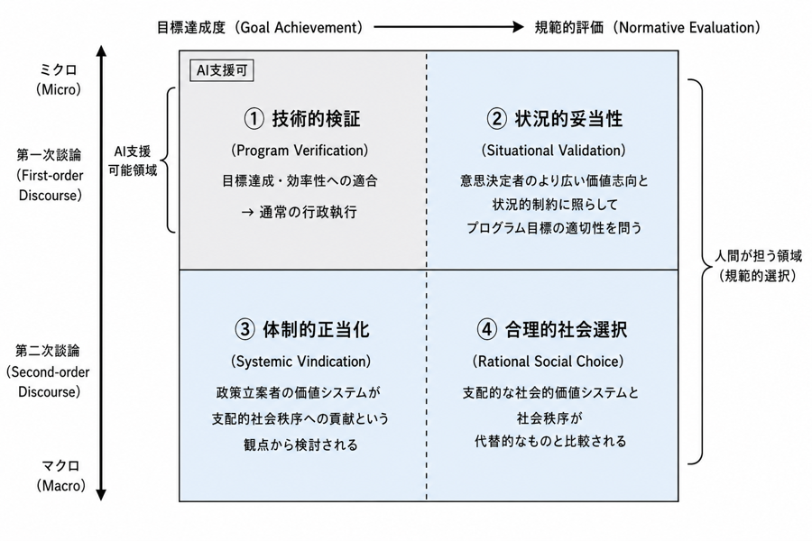
AIが有効なのは Fischer 層①（技術的検証）のみ——層②以上は心的システムによる偶有的な規範的選択を必要とし、生成AIが政策規範の創造を代替することはできない（第5章）。
AIの原理的限界：創造システム理論
「AIが政策規範を生成できないのはなぜか」——この問いに理論的に答える（井庭 2010；Luhmann 1984；Zönnchen et al. 2025）。
前スライドのウィキッド・プロブレム論がここに接続する：政策問題は唯一の正解を計算できない＝偶有的選択を構造的に必要とする。これが創造システム理論の適用条件（偶有性）を独立した根拠で満たす。
- 政策規範の更新は「創造」の一形態——《発見》とは《アイデア》・《関連づけ》・《帰結》という三つの偶有的選択の総合によって生じる事態（Iba 2010）
- AIは高度な《発見メディア》（言語・概念の複合性縮減、シミュレーション支援）として機能しうる
- しかし《発見》の主体にはなれない——その理由はSinn処理の構造にある（次スライド）
AIは《発見メディア》として機能できるが、規範の創造主体にはなれない——ゆえに規範の創造は人間が担わなければならない。
なぜAIは《発見》の主体になれないか——Sinn処理の構造
ルーマンのSinn（意味）概念：「過剰な可能性の中から意味ある参照を選択すること」——センス・メイキングとは偶有的な選択の連鎖である（Luhmann 1984）。
- AIはtemperature samplingで多様な出力を生成しうるが、それは統計的なランダムネスであり、価値判断を伴った意味の地平からの選択（Sinn処理）ではない（Zönnchen et al. 2025）
- LLMは「社会的に形成された言語パターンの再帰的な反射」にとどまり、独立した思考でも偶有的な意味選択でもない——確率分布からのサンプリングとSinn処理は本質的に異なる
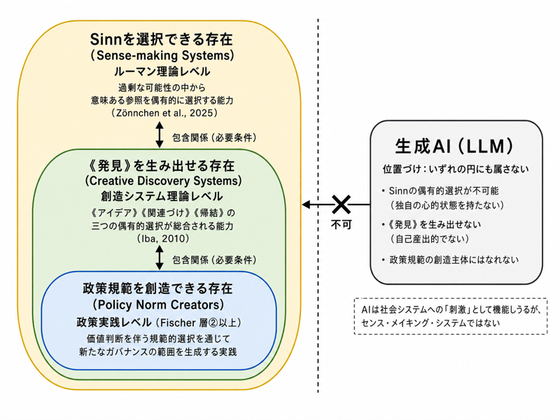
AIは最外円（Sinnを偶有的に選択できる存在）に属さない→内側の円にも属さない。したがってAIは政策規範の創造から原理的に排除される（Zönnchen et al. 2025; Iba 2010; Luhmann 1984）。
人間が規範を定義し、AIが補助する
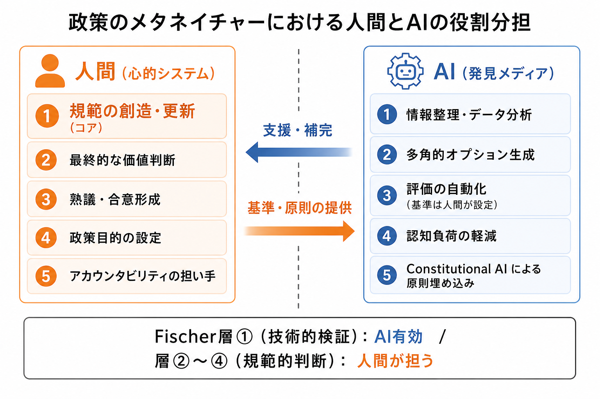
AIは人間の規範生成能力（本論文が第9章で「執政の創造性」として提案する概念）を代替するものではなく、《発見メディア》として補完する——複合性の縮減・オプション生成・シミュレーション支援において機能するが、偶有的な規範的選択の主体にはなれない（井庭 2010）。
- データ分析・選択肢提示で認知負荷を軽減——人間が規範的判断に集中できる環境を整える
- 秘密保護下で専門知を政策プロセスに接続——競合事業者間の情報を匿名化したまま評価
- 市民討議を支援し、規範生成の場を整える——Constitutional AIによる原則の制度的埋め込み
「人間が規範を選び続ける」は実践的に成立するのか——認知バイアスを持つ人間が実際に政策協調を達成できるのか。この問いがRQ3へ接続する。
航空管制：人間-AI役割分担の実践モデル
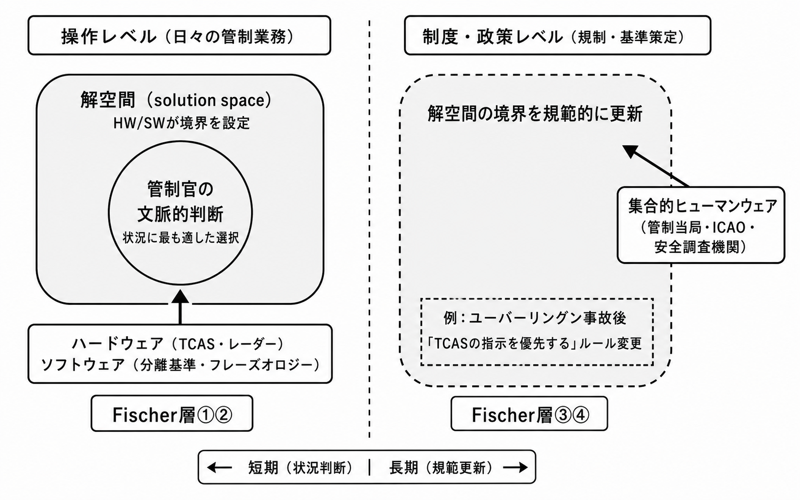
- ユーバーリングン事故（2002年）：TCASと管制官が互いに矛盾する指示を出した——規範的権威の競合が直接死亡事故を招いた
- 事故後の改善方向＝「TCASに従う」という規範を人間が明示的に決定——技術と規範の階層が再設計された
ATCの教訓：自動化の目的は人間オペレータの排除ではなく、限られた認知資源を規範的判断に集中させるための設計——政策のメタネイチャーにおけるAIの位置づけと同型。「バイアスのある人間が本当に規範的判断を担えるか」という問いが残る。
RQ2 応答：生成AIは《発見メディア》として機能するが、規範の創造主体にはなれない
- AIが担える領域（Fischer 層①）：データ分析・選択肢生成・情報集約・シミュレーション支援——複合性の縮減により人間の認知資源を規範的判断に集中させる
- AIが担えない領域（Fischer 層②〜④）：規範の創造・更新は偶有的な意味選択を必要とし、心的システムのカップリングなしには成立しない（井庭 2010；Luhmann 1984）
- 航空管制の実践的検証：高度に自動化されたATCでも人間の規範的判断が残るのは、規範的競合（ユーバーリングン事故）が技術的最適化で解決できないから——「TCASを優先する」というルール変更自体が人間による規範的選択
RQ2の結論：生成AIはメタネイチャー的政策環境において《発見メディア》として不可欠な役割を担う。しかし「何のために政策を行うか」という規範的判断の主体は人間コミュニティーでなければならない——これは理論的必然であり、制度設計上の要請である。
合理的政策形成は前提として必要か——認知バイアスは政策実現においてすべて悪か
第6章：研究目的——ハーバーマス批判への計算論的応答
本章の元文献（著者業績）
- 永田右京「拒否権プレーヤーの認知バイアスが協調的ガバナンスに与える影響の計算論的分析」『情報システム学会誌』（投稿・採録予定）
- 永田右京（2024）「「連携」と「共創」の再構築…」第47回日本計画行政学会全国大会 講演集——拒否権・協調の制度文脈
問いの出発点
第5章の理論（人間が規範を選び続ける）は理論的に正しくても、認知バイアスを持つ人間が実践的に政策協調を達成できるのか——ハーバーマスの「理想的発話状況」は現実に達成可能か、という問いへの応答が必要。
ハーバーマス批判の核心
- Rienstra & Visser（2007）：現実の人間は「動機づけられた推論」によって公正な合意に至れない
- Bagg（2018）：認知バイアスを持つ人間が実践的に熟議民主主義の前提条件を満たせないなら、規範的議論は砂上の楼閣
必要な応答の種類
- 「理論的な反論」では不十分——バイアスの存在は実証的事実
- 計算論的な応答：実際にバイアスのある人間の協調過程をシミュレートし、何がどの程度問題かを定量的に明らかにする
本章の結論（先取り）：「認知バイアスがあっても政策協調は成立する」——確証バイアスは有意な影響なし、現状維持・狭い視野は有害だが選択的な制度設計で管理可能。「完全に合理的な人間」を前提とする必要はない。
第6章：問い・仮説・モデル設計
問い
- 三種の認知バイアスが協調的ガバナンスの調整効率にどのような影響を与えるか
- どのバイアスが協調を阻害し、どのバイアスが許容可能か
- バイアスを持つ拒否権プレーヤーに対処するための制度設計原則は何か
仮説
- 仮説①：三種のバイアスは協調への影響に質的差異がある——すべてが等しく有害なわけではない
- 仮説②：確証バイアスは相対的に許容可能（Bergerot et al. 2024に基づく）
- 仮説③：現状維持バイアスと狭い視野は有害——強度に比例した管理が必要
三種のバイアスの数学的定式化
- 現状維持バイアス bsq：政策スタンス変化量への減衰係数 dθ/dt|biased = (1−bsq) · dθ/dt
- 確証バイアス bcf：協調係数のスケーリング k' = k · (1 + bcf · 0.5)
- 狭い視野 bnf：実効速度を局所目標速度へシフト ṽ = (1−bnf) · vcoord + bnf · vlocal
三種の認知バイアス——定義とモデルへの組み込み方
| バイアス | 定義 | モデルへの操作化 |
|---|---|---|
| 現状維持バイアス bsq ∈ [0,1] |
現在の状態を維持することを選好する傾向（Samuelson & Zeckhauser 1988）——政策変更への抵抗として実証 | 政策スタンス変化量への減衰係数： dθ/dt|biased = (1 − bsq) · dθ/dt b=1で完全固着 |
| 確証バイアス bcf ∈ [−1,1] |
既存の信念を確認する情報を優先的に処理する傾向——適度な確証バイアスは自信維持・協調参加を促す可能性もある（Bergerot et al. 2024） | 協調係数のスケーリング： k' = k · (1 + bcf · 0.5) 正値=過剰な自信、負値=過度の自己疑念 |
| 狭い視野 bnf ∈ [0,1] |
局所的最適化に焦点を当て全体最適を見落とす傾向（Kahneman 2011）——代替案比較・機会費用考慮の抑制として交通政策で実証 | 実効速度を局所目標速度へシフト： ṽ = (1 − bnf) · vcoord + bnf · vlocal b=1で完全な局所最適化 |
協調ロボット制御モデル（シミュレーション）
拒否権プレーヤー連鎖をN関節ロボットアームにマッピングし、政策目標（赤円）への収束を比較する（バイアス強度 b=0.8、関節5に付与）。
見方：白線＝拒否権プレーヤーの連鎖、手先＝最終決定者、赤円＝政策目標の範囲、黄点＝いま追いかけている目標地点。22,000回の実験はこのモデル上で三種のバイアス効果を定量化した。
22,000回シミュレーションの主要知見
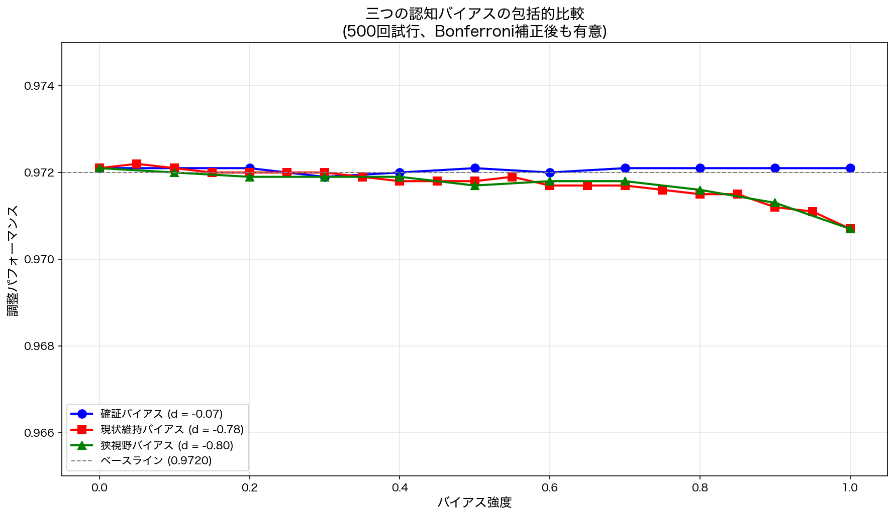
| バイアス | 効果量 | 判定・含意 |
|---|---|---|
| 確証バイアス | Cohen's d = −0.07（無視可能） | 相対的に許容可能——「活用可能な資源」として扱う |
| 現状維持バイアス | Cohen's d = −0.78（中程度）、R²=0.82 | 強度に比例した線形低下——発現しない構造的条件の設計が必要 |
| 狭い視野 | Cohen's d = −0.80（中程度）、強度0.7超で顕著化 | 最も有害——横断的KPI導入で対処 |
「認知バイアスがあっても政策協調は成立する」——確証バイアスは有意な影響なし、現状維持・狭い視野は有害だが選択的な制度設計で管理可能。では、その制度を実装するシステムとは何か。
バイアス管理の制度設計原則
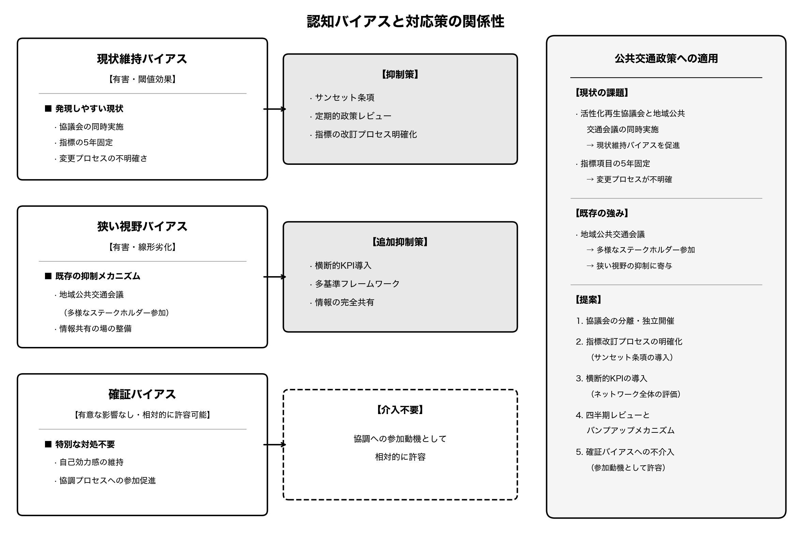
- 排除すべきバイアス——現状維持バイアス・狭い視野：これらを持たせない仕組みを組み込む。狭い視野には横断的KPI（地域全体の移動成功率・アクセシビリティ向上度など）の導入、多基準フレームワーク
- 許容可能なバイアス——確証バイアス：協調パフォーマンスに有意な影響なし（Cohen's d = −0.07）。「活用可能な資源」として扱う——適度な自信は協調参加を促す
- 現状維持バイアスの制度設計の焦点は事後的管理ではなく予防——発現しない構造的条件の設計
ハーバーマス的な「理想的発話状況」——「全てのバイアスを排除した理想的人間」——を前提にする必要はない。認知バイアスを持つ人間でも、選択的な制度設計によって熟議と同等の協調効果を得られる（chapter3 結論）。
RQ3：合理的政策は必要か——バイアスはすべて悪か
懐疑論：人間が認知バイアスを持つなら、そもそも「人間が規範を決める」というメタネイチャーの前提は現実的ではないのではないか。
- 現状維持バイアス（Cohen's d = −0.78, p<0.001）・狭い視野（強度0.7超で顕著化）：協調を破壊する → 制度的に排除すべき
- 確証バイアス（Cohen's d = −0.07, n.s.）：協調パフォーマンスに有意な影響なし → 「活用できる資源」として扱える
- 「合理的人間」を前提とする必要はない——バイアスの種類に応じた選択的制度設計で協調は実現する
協調と一定の最適化は実現する——「完全に合理的な政策形成」ではなく「バイアスを持つ人間の協調を制度で支える設計」こそがメタネイチャー実現の条件である。
メタネイチャー的政策環境は技術的に実現できるか
第7章：研究目的——秘密保護と民主的正当性の両立
本章の元文献（著者業績）
- 永田右京「秘密保護と民主的正当性を両立する政策評価システムの設計――市民討議とConstitutional AIを統合した政策評価インフラの構築」『土木学会論文集 通常号』（査読中）
- 永田右京（2025）「政策評価の新時代―ZK-SNARKs概念を援用した、ウィキッド・プロブレムに対応する政策評価の仕組み―」日本計画行政学会全国大会 講演集
- 永田右京（2025）「ZK-SNARKs模倣システムによる政策対話インフラの構築」政策情報学会研究大会 予稿集原稿
- 研究助成：2026年度 大林財団 奨励研究助成（Verdict）
解決すべき問題
第3章実証（市民参加わずか5%）・第4章実証（評価指標の同型化）が示した問題に対し、理論的に必要な仕組み（「執政の創造性」を発揮できる制度）を技術・制度として実装するシステムを設計する。
二重の制約——従来手法で解けない問題
- 秘密保護の制約：企業の技術情報・研究機関の未公開データ・個人の経験知は公開的な協議過程に提供しにくい（平塚市情報公開審査会答申第57号：「施設配置・収益施設の組み合わせ等は事業者のノウハウ」）
- 民主的正当性の制約：専門家のみが評価するとテクノクラシーに偏向——市民の批判回路（ケルゼン）を確保することが必要
従来手法の限界
- プロフェッショナル評価：機密情報を評価に反映できない
- ステークホルダー評価：利害対立の解決手段なし
- 協働型評価：機密情報の取り扱いが困難
第7章：問い・設計課題
問い
秘密保護と民主的正当性の二重制約のもとで機能する政策評価システムは、Constitutional AI × LLM as a Judge × 市民討議の統合によって実現可能か
設計課題の三段階
- Debate（市民討議・原則策定）：「何を評価基準とするか」を市民が討議し「憲法的原則」を共同策定するプロセスの設計
- Train（Constitutional AI訓練）：策定された原則をLLMに埋め込む——LoRA/QLoRAによる効率的ファインチューニングの設計
- Judge（秘密保護型評価）：秘密情報を含む政策提案を暗号化したまま評価し、結果のみを暗号化して送信するアーキテクチャの設計
評価視点
- 技術的実現可能性（暗号化・推論速度・秘密検出の設計完成度）
- 制度的整合性（第5章の設計原則①〜③との整合）
- 診断問題（第2〜4章）への対応可否
第7章：設計結果——三段階の診断問題への応答
| 三段階 | 解決する診断問題 | メカニズム |
|---|---|---|
| Debate | パーパス設定の阻害（第3章） | 地域が評価規範を内発——「何が成されるべきか」を市民が先に決める |
| Train | 評価指標の同型化（第4章） | 地域固有の価値原則をAI環境に埋め込む——中央省庁のテンプレートを超える |
| Judge | 実装ギャップ（第2章） | 秘密保護下の自律評価——全ステークホルダーの情報が評価に接続される |
Debate→Train→Judgeは「政策のメタネイチャー的環境」の技術的実装——中央省庁なしにどの地域でも一定品質の政策が自律的に生成・評価され続ける状態（斉藤 2025）の制度設計。
政策生成システムの三段階：Debate→Train→Judge
前提技術：Constitutional AI＝価値原則をAIに埋め込む学習手法（Anthropic 2022）。LLM as a Judge＝LLMが政策案を価値基準に照らして評価する手法。秘密計算＝データを暗号化したまま演算し、入力を開示せずに評価を実行する技術。
憲法的原則の
共同策定
Constitutional AI
訓練
政策評価
人間が最終判断
| 三段階 | メタネイチャーとの対応 | 診断が示した欠如への応答 |
|---|---|---|
| Debate | 人間コミュニティーが「何が成されるべきか」を決める主体 | パーパス設定の阻害 → 地域が規範を内発 |
| Train | 地域固有の価値原則をAI環境に埋め込む「手入れ」 | 同型化圧力 → 地域固有の評価原則を確立 |
| Judge | 中央省庁なしに政策が自律的に評価され続ける状態 | 実装ギャップ → 秘密保護下の自律評価を実現 |
このシステムは「政策のメタネイチャー的環境」の技術的実装である——中央省庁なしに、どの地域でも一定品質の政策が自律的に生成・評価され続ける状態（斉藤 2025）を、Debate（規範の内発）× Train（原則の埋め込み）× Judge（秘密保護評価）の三段階で実現する。
RQ4：設計構想——実証はこれから
問い（未応答）：秘密保護と民主的正当性の二重制約のもとで機能するシステムは実現可能か——「設計上は解ける」と「自治体環境で実際に動作する」は別問題である。
⚠️ 現時点は「構想段階」——第7章でアーキテクチャ設計を完了、第8章（Verdict実証）は2026年度内に実施予定。RQ4への応答は実証完了後に確定する。
- Constitutional AI × LLM as a Judge × 市民討議の統合アーキテクチャ（第7章設計済）——三要素の組み合わせで二重制約を同時に解く設計
- Debate→Train→Judge の三段階——規範定義・原則埋め込み・秘密保護評価の機能分離
- 岩手県内自治体での実証実験（2026年度予定）——技術的実現可能性と制度的受容性を検証予定
第8章：研究目的——Verdict実証計画
本章の元文献（著者業績）
- 第7章原稿「秘密保護と民主的正当性を両立する政策評価システムの設計…」『土木学会論文集 通常号』（査読中）——Verdict実装・実証章として展開
- 永田右京（2025）ZK-SNARKs・政策評価関連学会発表2件（計画行政学会全国大会・政策情報学会研究大会、上記第7章参照）
- Verdictシステム実装（2026年6月時点）——本章は実証計画と中間成果の報告
- 研究助成：2026年度 大林財団 奨励研究助成（Verdict）
位置づけ
第7章の設計提案を実際にソフトウェアとして実装し、地方自治体での実証実験を行うための計画を提示する。本章の執筆時点では実証実験は未実施——実証実験の設計と実装済みソフトウェアの概要を示す。
実証の三目的
- 技術的実現可能性：地方自治体環境でDebate→Train→Judgeが動作するか、推論速度・暗号化コスト・秘密検出精度を計測
- 制度的受容性：市民・自治体職員が「AI補助、判断は人間」という設計を受け入れるか——参加意欲・評価信頼・秘密保護安心感
- 運用課題の抽出：モデル更新・原則見直し・評価活用の実務的課題を特定
先行する関連実証
- さいたま市：保育所入所マッチング——技術的最適化（Fischer層①）と規範的選択（層②〜④）の分担モデル
- 横須賀市：生成AI全庁導入（年間22,700時間改善）とチャットボット2.2%失言率——規範的判断は人間が不可欠
第8章：問い・評価指標
問い（実証段階）
- 地方自治体の環境においてDebate→Train→Judgeの一連のプロセスが技術的に実行可能か
- 自治体職員や市民が市民討議による原則策定プロセスとAIによる政策評価プロセスを受け入れるか
- 実際の運用において発生する技術的・組織的課題は何か
評価指標の三分類
- 技術的指標：訓練済みモデル推論速度・暗号化計算時間・秘密検出精度・自己無撞着性ばらつき
- 制度的指標：市民討議への参加率・原則策定の合意形成度・評価結果への信頼度・秘密保護への安心感
- 運用指標：モデル更新の頻度・原則見直しの必要性・評価結果の活用率
第8章：現時点の成果——実装済みシステム（2026年6月）
Verdictの実装状況
| サブシステム | 実装状況 | 技術スタック |
|---|---|---|
| Debate | ✓ 実装完了 | Docker Compose, FastAPI, React, PostgreSQL, Redis |
| Train | ✓ 実装完了 | macOS + MLX Framework, LoRA/QLoRA パイプライン |
| Judge | ✓ 実装完了 | 暗号化VM + llama.cpp, RSA-OAEP + AES-256-GCM |
技術的検証の完了状況
- 秘密検出モジュールの動作確認——正規表現パターンマッチングと類似度計算の組み合わせ
- 自己無撞着性の確認——複数回評価で外れ値除外後のスコア安定性を確認
- ハイブリッド暗号化の実装確認——RSA-OAEP + AES-256-GCMによる評価結果の暗号化
実際の自治体での動作検証・市民参加プロセスの実施はまだ行われていない——これが2026年度の実証課題。
第8章：Verdict実証計画（今後の実験）
- 技術的実現可能性：Debate→Train→Judgeが地方自治体環境で動作するか
- 制度的受容性：市民・自治体職員がプロセスを受け入れるか
- 運用課題の抽出：モデル更新・原則見直し・評価活用の方法
- 対象：岩手県内の複数自治体（2026年度内）
- テーマ：地域公共交通政策の評価
- 評価軸：①AIによる評価結果の妥当性、②市民参加プロセスの受容度、③秘密保護の技術的完全性
- 実証結果を受けてDebate→Train→Judgeアーキテクチャを改訂
- 公共交通政策への具体的展開（規範生成・バイアス管理・秘密保護型評価）を論述（第10章）
第9章：制度設計への示唆（執筆予定）
本章の元文献（著者業績）
- 博士論文第9章（執筆予定）——第2–8章の統合による制度提言
- ◎ 何ロク・永田右京・楽奕平（2024）「地域公共交通のあるべき補助方式への一考察―赤字補填からの脱却の主張に着目して―」『土木学会論文集』80(9), 23-00238（査読付き）
- 永田右京（2025）「ウィキッド・プロブレムとしての『地域公共交通』…」第29回日本公共政策学会 講演集
⚠️ 以下は現時点の構想——第8章実証結果を受けて確定・修正する予定。
生成AIを《発見メディア》として活用するガバナンスの4原則（案）：
- 補完性：AIは人間の能力を補完し意思決定の質を高めるツールに徹する——規範の創造・更新は人間コミュニティーが担う
- 透明性：AIの活用方法と限界を明示し、推論プロセスを検証可能にする——Debateの議事録・Trainの原則文書・Judgeの評価根拠を公開
- アカウンタビリティ：最終的な価値判断と政策的責任は人間が負う——AIはあくまで「判断支援」であり「判断代行」ではない
- 継続的学習：AIと人間の協調プロセスを継続的に改善・調整する——定期的なDebateによる原則見直しを制度化
第2〜4章の診断・第5〜6章の理論的知見を統合した制度提言——第8章実証後に精緻化し、地方分権の逆回転に対する応答として第9章に執筆予定。
まとめ
-
「規範生成能力の欠如」という診断
2024年地方自治法改正（令和6年法律第65号）の逆回転は、地域行政が自律的に政策規範を生成できないことの帰結である。公共交通政策の実証（42自治体中1のみ効果定義・運輸局R²=13.8〜17.2%対地理R²=0.1〜2.2%）がこの構造を定量的に示す。 -
「生成AIの理論的役割と限界」（RQ2・RQ3）
生成AIはオプション生成・情報集約・規範的議論の支援に有効だが、規範の創造・更新は人間コミュニティーが担う——これはメタネイチャーの原典（斉藤 2025）が前提とする構造であり、第5章が創造システム理論・ルーマン理論で確認し、第6章の計算論的分析が補強する。 -
「Debate→Train→Judge」という技術構想（実証未完）
秘密保護と民主的正当性の二重制約を、Constitutional AI × LLM as a Judge × 市民討議の統合で突破する設計を第7章で完了。第8章・岩手県内自治体での実証実験（2026年度内）が最終的な検証となる——RQ4への応答は実証後に確定する。
今後の展開
- 第8章：岩手県内自治体でのVerdict実証実験（2026年度内）
- 第9〜10章の執筆：制度設計原則・公共交通政策への展開
- 最終提出：2027年1月